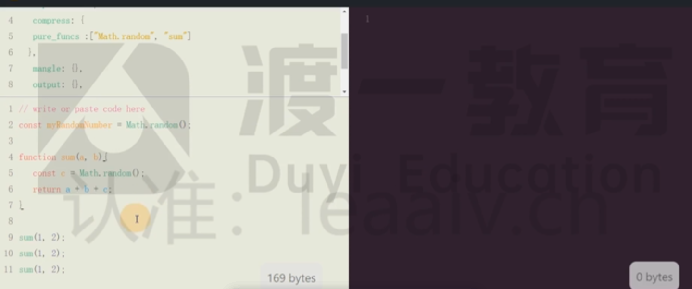
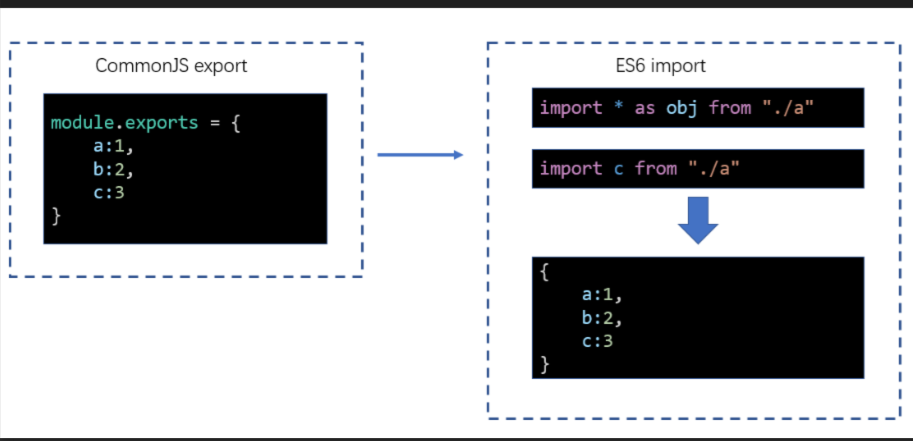

概述
本章所讲的性能优化主要体现在三个方面：

构建性能
这里所说的构建性能，是指在开发阶段的构建性能，而不是生产环境的构建性能
优化的目标，是降低从打包开始，到代码效果呈现所经过的时间
构建性能会影响开发效率。构建性能越高，开发过程中时间的浪费越少
传输性能
传输性能是指，打包后的 JS 代码传输到浏览器经过的时间
在优化传输性能时要考虑到：
- 总传输量：所有需要传输的 JS 文件的内容加起来，就是总传输量，重复代码越少，总传输量越少
- 文件数量：当访问页面时，需要传输的 JS 文件数量，文件数量越多，http 请求越多，响应速度越慢
- 浏览器缓存：JS 文件会被浏览器缓存，被缓存的文件不会再进行传输
运行性能
运行性能是指，JS 代码在浏览器端的运行速度
它主要取决于我们如何书写高性能的代码
永远不要过早的关注于性能，因为你在开发的时候，无法完全预知最终的运行性能，过早的关注性能会极大的降低开发效率
性能优化主要从上面三个维度入手
性能优化没有完美的解决方案，需要具体情况具体分析
构建性能优化
指的是开发性能，代码改动后的打包速度
不涉及到 npm run build 的速度
减少模块解析
什么叫做模块解析？

模块解析包括：抽象语法树分析、依赖分析、模块语法替换
不做模块解析会怎样？

如果某个模块不做解析，该模块经过 loader 处理后的代码就是最终代码。
如果没有 loader 对该模块进行处理，该模块的源码就是最终打包结果的代码。
如果不对某个模块进行解析，可以缩短构建时间
哪些模块不需要解析？
模块中无其他依赖：一些已经打包好的第三方库，比如 jquery
如何让某个模块不要解析？
配置module.noParse，它是一个正则，被正则匹配到的模块不会解析
module.exports = {
module: {
noParse: /test/
}
}
优化 loader 性能
进一步限制 loader 的应用范围
思路是：对于某些库，不使用 loader
例如：babel-loader 可以转换 ES6 或更高版本的语法，可是有些库本身就是用 ES5 语法书写的，不需要转换，使用 babel-loader 反而会浪费构建时间
lodash 就是这样的一个库
lodash 是在 ES5 之前出现的库，使用的是 ES3 语法
通过module.rule.exclude或module.rule.include，排除或仅包含需要应用 loader 的场景
module.exports = {
module: {
rules: [
{
test: /\.js$/,
exclude: /lodash/,
use: "babel-loader",
},
],
},
};
如果暴力一点，甚至可以排除掉node_modules目录中的模块，或仅转换src目录的模块
module.exports = {
module: {
rules: [
{
test: /\.js$/,
exclude: /node_modules/,
//或
// include: /src/,
use: "babel-loader",
},
],
},
};
这种做法是对 loader 的范围进行进一步的限制，和 noParse 不冲突，想想看，为什么不冲突
缓存 loader 的结果
我们可以基于一种假设：如果某个文件内容不变，经过相同的 loader 解析后，解析后的结果也不变
于是，可以将 loader 的解析结果保存下来，让后续的解析直接使用保存的结果
cache-loader可以实现这样的功能
module.exports = {
module: {
rules: [
{
test: /\.js$/,
use: ["cache-loader", ...loaders],
},
],
},
};
有趣的是，cache-loader放到最前面，却能够决定后续的 loader 是否运行
实际上，loader 的运行过程中，还包含一个过程，即pitch

流程：当运行 cache-loader 时候，pitch 可以来控制后续 loader 运行不运行，当 pitch 返回 true 的时候就直接返回了，不会运行后续 loader。
所以当有缓存的时候就不允许后续 loader，当没有缓存的时候继续向后运行 loader
cache-loader还可以实现各自自定义的配置，具体方式见文档
为 loader 的运行开启多线程
thread-loader会开启一个线程池，线程池中包含适量的线程
它会把后续的 loader 放到线程池的线程中运行，以提高构建效率
由于后续的 loader 会放到新的线程中，所以，后续的 loader 不能：
- 使用 webpack api 生成文件
- 无法使用自定义的 plugin api
- 无法访问 webpack options
在实际的开发中，可以进行测试，来决定
thread-loader放到什么位置
特别注意，开启和管理线程需要消耗时间，在小型项目中使用thread-loader反而会增加构建时间
热更新
热替换并不能降低构建时间（可能还会稍微增加），但可以降低代码改动到效果呈现的时间
当使用webpack-dev-server时，考虑代码改动到效果呈现的过程
而使用了热替换后，流程发生了变化

使用
- 更改配置
module.exports = {
devServer: {
hot: true, // 开启HMR
},
plugins: [
// 可选，不写也会默认给你加上
new webpack.HotModuleReplacementPlugin(),
],
};
- 更改代码
// index.js
if (module.hot) {
// 是否开启了热更新
module.hot.accept(); // 接受热更新
}
原理
首先，这段代码会参与最终运行！
当开启了热更新后，webpack-dev-server会向打包结果中注入module.hot属性
默认情况下，webpack-dev-server不管是否开启了热更新，当重新打包后，都会调用location.reload刷新页面
但如果运行了module.hot.accept()，将改变这一行为
module.hot.accept()的作用是让webpack-dev-server通过socket管道，把服务器更新的内容发送到浏览器

然后，将结果交给插件HotModuleReplacementPlugin注入的代码执行
插件HotModuleReplacementPlugin会根据覆盖原始代码，然后让代码重新执行
所以，热替换发生在代码运行期
总结
在没有开启热更新的时候，当 src 里面的代码修改以后，浏览器会重新刷新页面，这个时候页面的状态也会消失（比如说输入框中的内容）；但如果开启了热更新，浏览器和服务器之间会一直建立 socket 连接，一旦代码变动，会给浏览器发消息说 src 下有代码变动了，HotModuleReplacementPlugin 插件会去请求服务器拿到变动结果，拿到以后覆盖原代码，重新运行 js
样式热替换
对于样式也是可以使用热替换的，但需要使用style-loader
因为热替换发生时，HotModuleReplacementPlugin只会简单的重新运行模块代码
因此style-loader的代码一运行，就会重新设置style元素中的样式
而mini-css-extract-plugin，由于它生成文件是在构建期间，运行期间并会也无法改动文件，因此它对于热替换是无效的
传输性能优化
分包
什么是分包
分包是将一个整体的代码，分布到不同的打包文件中
为什么要分包
分包可以减少公共代码，降低总体积（特别是一些大型的第三方库）
充分利用了浏览器的缓存
什么时候要分包
多个 chunk 引入了公共模块
公共模块体积较大或较少的变动
如何分包
手动分包
自动分包
手动分包（不常用）
基本原理
手动分包的总体思路是：
- 先单独的打包公共模块

公共模块会被打包成为动态链接库(dll Dynamic Link Library)，并生成资源清单
- 根据入口模块进行正常打包
打包时，如果发现模块中使用了资源清单中描述的模块，则不会形成下面的代码结构
//源码，入口文件index.js
import $ from "jquery";
import _ from "lodash";
_.isArray($(".red"));
由于资源清单中包含jquery和lodash两个模块，因此打包结果的大致格式是：
(function (modules) {
//...
})({
// index.js文件的打包结果并没有变化
"./src/index.js": function (module, exports, __webpack_require__) {
var $ = __webpack_require__("./node_modules/jquery/index.js");
var _ = __webpack_require__("./node_modules/lodash/index.js");
_.isArray($(".red"));
},
// 由于资源清单中存在，jquery的代码并不会出现在这里
"./node_modules/jquery/index.js": function (
module,
exports,
__webpack_require__
) {
module.exports = jquery;
},
// 由于资源清单中存在，lodash的代码并不会出现在这里
"./node_modules/lodash/index.js": function (
module,
exports,
__webpack_require__
) {
module.exports = lodash;
},
});
打包公共模块
打包公共模块是一个独立的打包过程
- 单独打包公共模块，暴露变量名
// webpack.dll.config.js
module.exports = {
mode: "production",
entry: {
jquery: ["jquery"],
lodash: ["lodash"],
},
output: {
filename: "dll/[name].js",
library: "[name]",
},
};
- 利用
DllPlugin生成资源清单
// webpack.dll.config.js
module.exports = {
plugins: [
new webpack.DllPlugin({
path: path.resolve(__dirname, "dll", "[name].manifest.json"), //资源清单的保存位置
name: "[name]", //资源清单中，暴露的变量名
}),
],
};
运行后，即可完成公共模块打包
使用公共模块
- 在页面中手动引入公共模块
<script src="./dll/jquery.js"></script>
<script src="./dll/lodash.js"></script>
- 重新设置
clean-webpack-plugin
如果使用了插件clean-webpack-plugin，为了避免它把公共模块清除，需要做出以下配置
new CleanWebpackPlugin({
// 要清除的文件或目录
// 排除掉dll目录本身和它里面的文件
cleanOnceBeforeBuildPatterns: ["**/*", "!dll", "!dll/*"],
});
目录和文件的匹配规则使用的是globbing patterns
- 使用
DllReferencePlugin控制打包结果
module.exports = {
plugins: [
new webpack.DllReferencePlugin({
manifest: require("./dll/jquery.manifest.json"),
}),
new webpack.DllReferencePlugin({
manifest: require("./dll/lodash.manifest.json"),
}),
],
};
总结
手动打包的过程：
- 开启
output.library暴露公共模块 - 用
DllPlugin创建资源清单 - 用
DllReferencePlugin使用资源清单
手动打包的注意事项：
- 资源清单不参与运行，可以不放到打包目录中
- 记得手动引入公共 JS，以及避免被删除
- 不要对小型的公共 JS 库使用
优点：
- 极大提升自身模块的打包速度
- 极大的缩小了自身文件体积
- 有利于浏览器缓存第三方库的公共代码
- 构建性能也会得到提升
缺点：
- 使用非常繁琐
- 如果第三方库中包含重复代码，则效果不太理想
自动分包（常用）
会减低构建性能，提升开发效率
基本原理
不同与手动分包，自动分包是从实际的角度出发，从一个更加宏观的角度来控制分包，而一般不对具体哪个包要分出去进行控制
因此使用自动分包，不仅非常方便，而且更加贴合实际的开发需要
要控制自动分包，关键是要配置一个合理的分包策略
有了分包策略之后，不需要额外安装任何插件，webpack 会自动的按照策略进行分包
实际上，webpack 在内部是使用
SplitChunksPlugin进行分包的

从分包流程中至少可以看出以下几点：
- 分包策略至关重要，它决定了如何分包
- 分包时，webpack 开启了一个新的 chunk，对分离的模块进行打包
- 打包结果中，公共的部分被提取出来形成了一个单独的文件，它是新 chunk 的产物
分包策略的基本配置
webpack 提供了optimization配置项，用于配置一些优化信息
其中splitChunks是分包策略的配置
module.exports = {
optimization: {
splitChunks: {
// 分包策略
},
},
};
事实上，分包策略有其默认的配置，我们只需要轻微的改动，即可应对大部分分包场景
- chunks
该配置项用于配置需要应用分包策略的 chunk
我们知道，分包是从已有的 chunk 中分离出新的 chunk，那么哪些 chunk 需要分离呢
chunks 有三个取值，分别是：
- all: 对于所有的 chunk 都要应用分包策略
- async：【默认】仅针对异步 chunk 应用分包策略
- initial：仅针对普通 chunk 应用分包策略
所以，你只需要配置chunks为all即可
- maxSize
该配置可以控制包的最大字节数
如果某个包（包括分出来的包）超过了该值，则 webpack 会尽可能的将其分离成多个包
但是不要忽略的是，分包的基础单位是模块，如果一个完整的模块超过了该体积，它是无法做到再切割的，因此，尽管使用了这个配置，完全有可能某个包还是会超过这个体积
另外，该配置看上去很美妙，实际意义其实不大
因为分包的目的是提取大量的公共代码，从而减少总体积和充分利用浏览器缓存
虽然该配置可以把一些包进行再切分，但是实际的总体积和传输量并没有发生变化
如果要进一步减少公共模块的体积，只能是压缩和
tree shaking
分包策略的其他配置
如果不想使用其他配置的默认值，可以手动进行配置：
- automaticNameDelimiter：新 chunk 名称的分隔符，默认值~
- minChunks：一个模块被多少个 chunk 使用时，才会进行分包，默认值 1
- minSize：当分包达到多少字节后才允许被真正的拆分，默认值 30000
缓存组
之前配置的分包策略是全局的
而实际上，分包策略是基于缓存组的
每个缓存组提供一套独有的策略，webpack 按照缓存组的优先级依次处理每个缓存组，被缓存组处理过的分包不需要再次分包
默认情况下，webpack 提供了两个缓存组：
module.exports = {
optimization: {
splitChunks: {
//全局配置
cacheGroups: {
// 属性名是缓存组名称，会影响到分包的chunk名
// 属性值是缓存组的配置，缓存组继承所有的全局配置，也有自己特殊的配置
vendors: {
test: /[\\/]node_modules[\\/]/, // 当匹配到相应模块时，将这些模块进行单独打包
priority: -10, // 缓存组优先级，优先级越高，该策略越先进行处理，默认值为0
},
default: {
minChunks: 2, // 覆盖全局配置，将最小chunk引用数改为2
priority: -20, // 优先级
reuseExistingChunk: true, // 重用已经被分离出去的chunk
},
},
},
},
};
很多时候，缓存组对于我们来说没什么意义，因为默认的缓存组就已经够用了
但是我们同样可以利用缓存组来完成一些事情，比如对公共样式的抽离
module.exports = {
optimization: {
splitChunks: {
chunks: "all",
cacheGroups: {
styles: {
test: /\.css$/, // 匹配样式模块
minSize: 0, // 覆盖默认的最小尺寸，这里仅仅是作为测试
minChunks: 2, // 覆盖默认的最小chunk引用数
},
},
},
},
module: {
rules: [
{ test: /\.css$/, use: [MiniCssExtractPlugin.loader, "css-loader"] },
],
},
plugins: [
new CleanWebpackPlugin(),
new HtmlWebpackPlugin({
template: "./public/index.html",
chunks: ["index"],
}),
new MiniCssExtractPlugin({
filename: "[name].[hash:5].css",
// chunkFilename是配置来自于分割chunk的文件名
chunkFilename: "common.[hash:5].css",
}),
],
};
配合多页应用
虽然现在单页应用是主流，但免不了还是会遇到多页应用
由于在多页应用中需要为每个 html 页面指定需要的 chunk，这就造成了问题
new HtmlWebpackPlugin({
template: "./public/index.html",
chunks: ["index~other", "vendors~index~other", "index"],
});
我们必须手动的指定被分离出去的 chunk 名称，这不是一种好办法
幸好html-webpack-plugin的新版本中解决了这一问题
npm i -D html-webpack-plugin@next
做出以下配置即可：
new HtmlWebpackPlugin({
template: "./public/index.html",
chunks: ["index"],
});
它会自动的找到被index分离出去的 chunk，并完成引用
目前这个版本仍处于测试解决，还未正式发布
原理
自动分包的原理其实并不复杂，主要经过以下步骤：
- 检查每个 chunk 编译的结果
- 根据分包策略，找到那些满足策略的模块
- 根据分包策略，生成新的 chunk 打包这些模块（代码有所变化）
- 把打包出去的模块从原始包中移除，并修正原始包代码
在代码层面，有以下变动
- 分包的代码中，加入一个全局变量，类型为数组，其中包含公共模块的代码
- 原始包的代码中，使用数组中的公共代码
单模块体积优化
代码压缩（Terser）
前言
- 为什么要进行代码压缩
减少代码体积；破坏代码的可读性，提升破解成本
- 什么时候要进行代码压缩
生产环境
- 使用什么压缩工具
目前最流行的代码压缩工具主要有两个：UglifyJs和Terser
UglifyJs是一个传统的代码压缩工具，已存在多年，曾经是前端应用的必备工具，但由于它不支持ES6语法，所以目前的流行度已有所下降。
Terser是一个新起的代码压缩工具，支持ES6+语法，因此被很多构建工具内置使用。
**webpack**安装后会内置**Terser**，当启用生产环境后即可用其进行代码压缩。
因此，我们选择Terser
关于副作用 side effect
副作用：函数运行过程中，可能会对外部环境造成影响的功能
如果函数中包含以下代码，该函数叫做副作用函数:
- 异步代码
比如发送 ajax 请求要通过浏览器，这是外部环境，对他造成了影响
比如 setTimeout 会导致浏览器开始计时，所以对浏览器也造成了影响
一个函数运行完了，按理说应该结束，但是由于函数内部有异步代码导致函数执行完了，函数依然没有结束，要等待异步代码，这样就算是有副作用，会对外部造成影响
- localStorage
浏览器的本地储存，也是外部环境
- 对外部数据的修改
这个函数对外部传进来的参数进行了修改，也算是有副作用
function test(obj){
obj.a = 5
}
//或者说
var d = 5;
function test(obj){
d = 6;
}
如果一个函数没有副作用，同时，函数的返回结果仅依赖参数，则该函数叫做纯函数(pure function)
这个函数虽然没有对外部环境造成影响，但每次调用会得到不一样的值，不能认为是纯函数
纯函数非常利于优化
function a() {
const date = new Date();
return date;
}
有些时候，terser 可能分析不出来一个函数是不是纯函数，因为纯函数可以非常利于优化，这个时候我们可以手动告诉 terser 哪些函数是纯函数

打上/*#PURE_*就标记这个函数是一个纯函数，也是告诉 terser 的一种方法
Terser
在Terser的官网可尝试它的压缩效果
Terser 官网：https://terser.org/
作用
他不考虑什么兼容性问题，他就是尽可能的压缩，让代码体积更小一点
移除模块内部的无效代码
- 定义了但未使用，不会给你打包进去
//打包前
const a = 1;
const b = 2;
console.log(a+b)
//打包后
console.log(3)
//打包前
function a(){
const dd = 2;
return dd;
}
//打包后是空的，因为他认为你虽然定义了，但未使用，等于没用
- 一个函数，在 return 以后又写了一些代码，他不会给你打包进去（DCE dead code）
//打包前
function a(){
const c = 2;
return c;
const b = 3;
}
//打包后
function a(){
return 2;
}
- 命名替换，空格压缩
//打包前
const random = Math.random();
console.log(random)
//打包后
const o=Math.random();console.log(o);
4.被 tree shaking 标记的无效代码，在移除的这一步，还是交给 terser（代码压缩来做）
webpack+Terser
webpack 自动集成了 Terser
如果你想更改、添加压缩工具，又或者是想对 Terser 进行配置，使用下面的 webpack 配置即可
const TerserPlugin = require("terser-webpack-plugin");
const OptimizeCSSAssetsPlugin = require("optimize-css-assets-webpack-plugin");
module.exports = {
optimization: {
// 是否要启用压缩，默认情况下，生产环境会自动开启
minimize: true,
minimizer: [
// 压缩时使用的插件，可以有多个
new TerserPlugin(),
new OptimizeCSSAssetsPlugin(),
],
},
};
``;
terser 只能压缩 js
optimize-css-assets-webpack-plugin 这个可以压缩 css
tree shaking
压缩可以移除模块内部的无效代码
tree shaking 可以移除模块之间的无效代码
背景
某些模块导出的代码并不一定会被用到
// myMath.js
export function add(a, b) {
console.log("add");
return a + b;
}
export function sub(a, b) {
console.log("sub");
return a - b;
}
// index.js
import { add } from "./myMath";
console.log(add(1, 2));
tree shaking 用于移除掉不会用到的导出
使用
只要是生产环境，tree shaking自动开启
开发环境使用，没有太大意义，因为服务器在本地，不存在什么传输效率问题
原理
webpack 会从入口模块出发寻找依赖关系
当解析一个模块时，webpack 会根据ES6 的模块导入语句来判断，该模块依赖了另一个模块的哪个导出（检测哪些东西要用）
webpack 之所以选择 ES6 的模块导入语句，是因为 ES6 模块有以下特点：
- 导入导出语句只能是顶层语句
- import 的模块名只能是字符串常量
- import 绑定的变量是不可变的
这些特征都非常有利于分析出稳定的依赖
使用 commonjs 导入是没法通过 tree shaking 来优化的
在具体分析依赖时，webpack 坚持的原则是：保证代码正常运行，然后再尽量 tree shaking
所以，如果你依赖的是一个导出的对象，由于 JS 语言的动态特性，以及webpack还不够智能，为了保证代码正常运行，它不会移除对象中的任何信息
通过这样的方式导入导出，没法进入 tree shaking 优化
//导出
export default {
add: function add(a, b) {
console.log("add");
return a + b;
},
sub: function sub(a, b) {
console.log("sub");
return a - b;
},
};
//导入
import obj from "./myMath";
obj.add(1);
通过 commonjs 的方式导出，没法进行 tree shaking 优化，因为他的导出方式相等于上面那种 es6 导出的方式

两种导入方式的不同
//这种方式导入obj内部可以变
import obj from "./myMath";
obj.add(1，2)
obj.add = function newAdd(){
}
//这种方式导入obj内部不可以变
//这种方式导入是将所有的普通导出，合并成一个对象（将具名和默认的变量全部导出）
import * as obj from "./myMath";
因此，我们在编写代码的时候，尽量：
- 使用
export xxx导出，而不使用export default {xxx}导出 - 使用
import {xxx} from "xxx"导入，而不使用import xxx from "xxx"导入
依赖分析完毕后，webpack会根据每个模块每个导出是否被使用，标记其他导出为dead code，然后交给代码压缩工具(terser)处理
代码压缩工具(terser)最终移除掉那些dead code代码
使用第三方库
某些第三方库可能使用的是commonjs的方式导出，比如lodash
又或者没有提供普通的 ES6 方式导出
对于这些库，tree shaking是无法发挥作用的
因此要寻找这些库的es6版本，好在很多流行但没有使用的ES6的第三方库，都发布了它的ES6版本，比如lodash-es
作用域分析
tree shaking本身并没有完善的作用域分析，可能导致在一些dead code函数中的依赖仍然会被视为依赖
插件webpack-deep-scope-plugin提供了作用域分析，可解决这些问题（使用以后构建性能一定会降低，因为要进行抽象语法树分析）
现在 webpack5 已经非常智能，不再需要
这个代码，整体来看我们并不依赖 lodash 但 lodash 的代码还是会进来（myChunk 应该是 dead code,但是他依然认为 myMath.js 这个文件依赖 lodash 的 chunk）,最终结果里我们写的 myChunk 函数已经没了，但 lodash 的 chunk 还在，这就是缺少作用域分析。
//index.js 入口
import { add } from "./myMath";
console.log(add(1, 2));
//myMath.js
import { chunk } from "lodash-es";
export function add(a, b) {
console.log("add");
return a + b;
}
export function sub(a, b) {
console.log("sub");
return a - b;
}
export function myChunk(arr, num) {
console.log("myChunk");
return chunk(arr, num);
}
副作用问题
webpack 在tree shaking的使用，有一个原则：一定要保证代码正确运行
在满足该原则的基础上，再来决定如何tree shaking
因此，当webpack无法确定某个模块是否有副作用时，它往往将其视为有副作用
因此，某些情况可能并不是我们所想要的
//common.js
var n = Math.random();
//index.js
import "./common.js";
虽然我们根本没用有common.js的导出，但webpack担心common.js有副作用，如果去掉会影响某些功能
如果要解决该问题，就需要标记该文件是没有副作用的
在package.json中加入sideEffects
{
"sideEffects": false
}
有两种配置方式：
- false：当前工程中，所有模块都没有副作用。注意，这种写法会影响到某些 css 文件的导入
- 数组：设置哪些文件拥有副作用，例如：
["!src/common.js"]，表示只要不是src/common.js的文件，都有副作用
这种方式我们一般不处理，通常是一些第三方库在它们自己的
package.json中标注
css tree shaking
webpack无法对css完成tree shaking，因为css跟es6没有半毛钱关系
因此对css的tree shaking需要其他插件完成
例如：purgecss-webpack-plugin
注意：
purgecss-webpack-plugin对css module无能为力
const Purgecss = require("purgecss-webpack-plugin");
const path = require("path");
const globAll = require("glob-all");
const srcAbs = path.resolve(__dirname, "src"); //得到src的绝对路径
const htmlPath = path.resolve(__dirname, "public/index.html");
const paths = globAll.sync([`${srcAbs}**/*.js`, htmlPath]);
module.exports = {
module: {
rules: [{ test: /\.css$/, use: [MiniCss.loader, "css-loader"] }],
},
plugins: [
new Purgecss({
paths,
}),
],
};
懒加载
首先，commonjs 没法实现懒加载
其次，es module 要实现懒加载必须使用这样的语法(动态导入)
import()会返回一个 promise 相当于是（* as obj），动态导入无法 tree shaking
const { chunk } = await import(/* webpackChunkName:"lodash" */ "lodash-es");
原理
浏览器会使用 JSOP 的方式远程去读取一个 js 模块，就是说动态加载的模块一开始并不会打包进入主文件中，当触发条件以后，再发送 ajax 请求去获取这个文件内容，当然这个结果会缓存下来，重复点击不会重复请求文件（只会请求一次）
依赖 webpack 内部有一个 webpackJson 这个数组会注入到浏览器环境中
如果想要实现 tree shaking 可以这样绕个弯子，util.js 是静态的所有说已经完成了对 lodash 的 tree shaking，后面再使用 util 这个模块就可以了
const btn = document.querySelector("button");
btn.onclick = async function () {
//动态加载
const { chunk } = await import("./util");
const result = chunk([3, 5, 6, 7, 87], 2);
console.log(result);
};
//util.js
export { chunk } from "lodash-es";
gzip
gzip 是一种压缩文件的算法
B/S 结构中的压缩传输

优点：传输效率可能得到大幅提升
缺点：服务器的压缩需要时间，客户端的解压需要时间
使用 webpack 进行预压缩
使用compression-webpack-plugin插件对打包结果进行预压缩，可以移除服务器的压缩时间

compression-webpack-plugin
const { CleanWebpackPlugin } = require("clean-webpack-plugin");
const CmpressionWebpackPlugin = require("compression-webpack-plugin");
module.exports = {
mode: "production",
optimization: {
splitChunks: {
chunks: "all",
},
},
plugins: [
new CleanWebpackPlugin(),
new CmpressionWebpackPlugin({
test: /\.js/,
minRatio: 0.5,
}),
],
};
DNS 解析和优化
在打包完的 html 中使用脚本分析外部链接，然后在头部进行字符串处理
流程
1.找到所有的 js,css
2.正则查找匹配外连接
3.然后用 set 存起来，在头部加入字符串
glob 库去找外部 css,js
node-html-parse 可以在 node 解析 html
执行性能优化
webpack scope hoisting
scope hoisting 是 webpack 的内置优化，它是针对模块的优化，在生产环境打包时会自动开启。
在未开启 scope hoisting 时，webpack 会将每个模块的代码放置在一个独立的函数环境中，这样是为了保证模块的作用域互不干扰。
而 scope hoisting 的作用恰恰相反，是把多个模块的代码合并到一个函数环境中执行。在这一过程中，webpack 会按照顺序正确的合并模块代码，同时对涉及的标识符做适当处理以避免重名。
这样做的好处是减少了函数调用，对运行效率有一定提升，同时也降低了打包体积。
但 scope hoisting 的启用是有前提的，如果遇到某些模块多次被其他模块引用，或者使用了动态导入的模块，或者是非 ESM 的模块，都不会有 scope hoisting。
减少函数
创建函数要创建执行栈，要初始化执行上下文，这些工作会运行效率产生影响
辅助工具
webpack-bundle-analyzer
一个帮助分析打包后体积的工具，配置以后打包完成时会自动打开一个网页来给你展示各个包的大小
const { CleanWebpackPlugin } = require("clean-webpack-plugin");
const WebpackBundleAnalyzer =
require("webpack-bundle-analyzer").BundleAnalyzerPlugin;
module.exports = {
mode: "production",
optimization: {
splitChunks: {
chunks: "all",
},
},
plugins: [new CleanWebpackPlugin(), new WebpackBundleAnalyzer()],
};
speed-measure-webpack-plugin
该插件主要用于分析打包的时候各个地方的耗时情况。
分析过后，往往存在这么几个方面比较耗时：
- JavaScript 编译：Babel 编译 JavaScript 代码花费了大量时间。
- 打包时间：Webpack 的模块打包花费了很长时间，特别是在处理大型依赖和复杂的项目结构时。
- 插件耗时：一些插件，如 TerserWebpackPlugin（用于代码压缩），在处理大量代码时会变得非常慢。
- 文件读取与写入：文件系统操作，特别是读取和写入缓存，耗时较长。
- 热更新（HMR）：在开发环境中，热更新的处理时间也较长，特别是在修改较多文件时。
nst SpeedMeasurePlugin = require("speed-measure-webpack-plugin");
const smp = new SpeedMeasurePlugin();
const webpackConfig = {
// 你的 Webpack 配置
};
module.exports = smp.wrap(webpackConfig);
可优化内容
- 打包优化
- 首屏优化
- 网络优化
- 启动优化
- vue 优化
性能
FCP (First Contentful Paint)
首次内容绘制，浏览器首次绘制来自 DOM 的内容的时间，内容必须包括文本，图片，非白色的 canvas 或 svg，也包括带有正在加载中的 web 字体文本。这是用户第一次看到的内容。
FCP 时间(秒) 颜色编码 FPC 分数
0 - 1.8 绿色(快) 75 - 100
1.8 - 3 橙色(中等) 50 - 74
超过 3 红色(慢) 0 - 49
LCP (Largest Contentful Paint)
最大内容绘制，可视区域中最大的内容元素呈现到屏幕上的时间，用以估算页面的主要内容对用户的可见时间。img 图片，video 元素的封面，通过 url 加载到的北京，文本节点等，为了提供更好的用户体验，网站应该在 2.5s 以内或者更短的时间最大内容绘制。
LCP 时间(秒) 颜色编码
0 - 2.5 绿色(快)
2.5 - 4 橙色(中等)
超过 4 红色(慢)
FID (First Input Delay)
首次输入延迟，从用户第一次与页面进行交互到浏览器实际能够响应该交互的时间，输入延迟是因为浏览器的主线程正忙于做其他事情，所以不能响应用户，发生这种情况的一个常见原因是浏览器正忙于解析和执行应用程序加载的大量计算的 JavaScript。
FID 时间(毫秒) 颜色编码
0 - 100 绿色(快)
100 - 300 橙色(中等)
超过 300 红色(慢)
TTI (Time to Interactive)
网页第一次完全达到可交互状态的时间点，浏览器已经可以持续的响应用户的输入，完全达到可交互的状态的时间是在最后一个长任务完成的时间，并且在随后的 5s 内网络和主线程是空闲的。从定义上来看，中文名称叫持续可交互时间或可流畅交互时间更合适。
TTI 时间(秒) 颜色编码
0 - 3.8 绿色(快)
3.9 - 7.3 橙色(中等)
超过 7.3 红色(慢)
TBT (Total Block Time)
总阻塞时间，度量了 FCP 和 TTI 之间的总时间，在该时间范围内，主线程被阻塞足够长的时间以防止输入响应。只要存在长任务，该主线程就会被视为阻塞，该任务在主线程上运行超过 50 毫秒。
线程阻塞是因为浏览器无法中断正在进行的任务，因此如果用户确实在较长的任务中间与页面进行交互，则浏览器必须等待任务完成才能响应。
TBT 时间(毫秒) 颜色编码
0 - 300 绿色(快)
300 - 600 橙色(中等)
超过 600 红色(慢)
CLS (Cumulative Layout Shift)
累计布局位移，CLS 会测量在页面整个生命周期中发生的每个意外的布局移位的所有单独布局移位分数的总和，他是一种保证页面的视觉稳定性从而提升用户体验的指标方案。
用人话来说就是当点击页面中的某个元素的时候，突然布局变了，手指点到了其它位置。比如想点击页面的链接，突然出现了一个 banner。这种情况可能是因为尺寸未知的图像或者视频。
CLS 时间(毫秒) 颜色编码
0 - 0.1 绿色(快)
0.1 - 0.25 橙色(中等)
超过 0.25 红色(慢)
性能测试工具
可以使用浏览器工具，比如 Chrome DevTools，Lighthouse，Performance，Network 网络分析，Memory 面板等等，这些数据拿到的结果都是实验室数据。
要准确的用户数据就必须上相关的性能监控埋点。